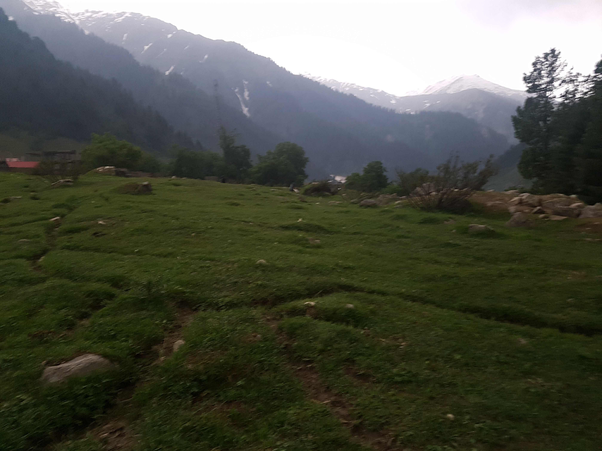
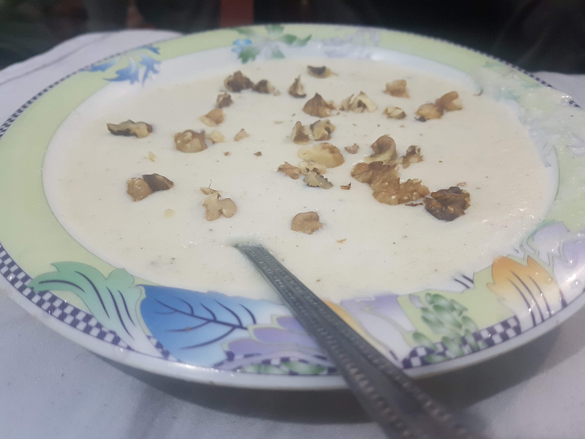

현지인 속으로, 더 깊이!
2017년 06월 05일
파키스탄
어제 피곤했는지 아침에 늦게 일어나게 된다. 오늘 묶었던 호텔에서 체크아웃 하고 아킬네 호텔에 무료로 묶기로 했다. 10시에 아킬과 슈퍼에서 만나기로 했다. 아킬이 10시에 지프를 예약해주기로 했기 때문이다. 원래는 모든 짐을 다 싼뒤 10시에 체크아웃하려고 했는데 늦게 일어나서 짐을 싸지 못했다. 다행이 2~3시에 체크아웃을 해도 된다고 허락을 받아서 대충 씻고 그냥 아킬네 가게로 갔다.
10시가 넘었지만 가게는 문이 열려있지 않았다. 라마단 기간이기 때문에 다들 늦게자고 늦게 일어난다. 10시 20분가량이 되서야 아킬이 밖으로 나왔다. 길 앞에 사람들이 타고있는 지프가 보였다. 아킬이 바로 그 지프를 잡아줬다. 지프를 공유하기 때문에, 가격은 500루피! 와우. 원래 혼자 예약하면 1500루피에 세이프 말룩 호수에 갈 수 있는데 엄청나게 비용을 절약해서 기뻤다. 그동안 지불했던 지프 비용이 얼마던가 ㅜ 6500루피 한번 6000루피 한번.. 두개 합쳐서 항공권 값이다.
지프에 있던 4명의 친구들 또 다른 새로운 친구가 생겼다. 20~23살정도의 젊은 친구들이다. 놀랍게도 그중 3명은 크리스찬이라고 한다. 무슬림 국가에서 기독교인을 보게되어 흥미로웠다. 파키스탄은 세계에서 2번째 무슬림 국가라고 한다. 무슬림과 크리스찬이 서로 잘 어울릴 수 있을까? 다행이도 서로 각자의 종교를 존중한다고 한다. 사실 무슬림과 크리스찬 모두 동일한 하나님(알라)을 섬기기 때문에 큰 문제가 없을것도 같다.
그중 우마르라는 친구가 나와 우리나라에 많은 관심을 가졌다. 내게 끊임없이 질문을 했고 나는 답했다. 그렇게 이 친구와 더 가까워진것 같다. 새로운 친구를 사귀는일은 언제나 즐거운것 같다.
호수에 도착했다. 그동안 멋진 경치에 무감각해진걸까? 생각보다 크게 감흥이 느껴지지는 않았다. 우리는 3시간동안 호수 구경을 한 뒤 다시 지프를 타고 돌아가야 한다. 나는 조용한 호수를 바라보며 앉아있다 걷다가를 반복했다. 호수는 움직임이 없었다. 그저 바람에 잔물결이 흐를 뿐이었다. 내가 봤던 호수중 가장 잔잔한 호수 였다. 호수를 바라보고 앉아있으니 생각보다 상당히 평온해 졌다. 그리고 왠지 모르겠지만 점점 피로해졌다.
오늘 급작스럽게 지프를 탔기 때문일까? 엄청 배고팠다. 내가 먹은 아침이라고 해봐짜 200ml우유에 무슬리 약간 말아먹은것 뿐이다. 에너지가 부족해서 그런지 점점 피로감이 쌓였다. 잔잔한 호수를 바라봐서 마음이 안정되는것도 한 몫한것 같다.
그동안 히말라야 전체를 돌아다녀서 멋진경치는 죄다 경험했기 때문인지 몰라도 이 saif muluk 호수는 장엄하다기 보다는 평온한 느낌이었다. 더 깊은 계곡 방향의 풍경은 굉장히 신비로웠다. 나는 계곡 더 깊은곳으로 가고 싶었고 혼자 한번 이동해봤다. 다행이 뒤의 친구들이 따라왔다.
이친구들은 엄청 더운 라호르에 사는 친구들이라 눈을 많이 못봐서 그런지 눈만보이면 미끄럼을 타고 좋아했다.
호수에 비친 숲사람.
돌아갈 시간이 되어갈즘 나는 에너지가 고갈되었다. 이렇게 지치고 힘든 느낌은 처음이었다. 라마단 기간이라 밥도 제대로 못 먹고 또 어제 현지인 들이랑 노느라 2시넘게 잤기 때문인것 같다. 돌아오는 흔들리는 지프속에서도 잠이 들었다. 곧 도착했는데 왠걸 갑자기 1000루피를 달라고 한다. 분명 500이라고 했는데? 나는 아킬이랑 이야기하자고 했다. 돈가지고 장난하는 경험은 파키스탄에서 처음 당해봤다. 보통 이런일이 별로 없는데말이다. 다행이 아킬이 700까지 흥정을 해줬지만 나는 못마땅했다. 아킬이 자기가 내주겠다고 했다. 진짜 고마운친구다. 하지만 그렇게 할 순없었다. 나는 700을 지불하고 오늘의 호수 탐사를 마무리 했다. 그래도 700이면 반값에 이용한거다. 저렴한 금액이다.
나는 오자마자 너무 배고파서 아킬이 일려준 케밥집으로 갔다. 여기서 말하는 케밥은 고기 다진것을 기름에 튀긴음식을 말한다. 그 케밥을 난에 말아먹었는데 맙소사. 엄청 맛있었다. 그리고 라마단 기간에 먹을 수 있는 최고의 점심이었다. 어제 이런것이 있는지 알았으면 진작 먹었을 텐데 아쉬웠다. 내일 또먹고 싶지만 내일은 다른곳으로 이동할 예정이다.
체크아웃을 하러 숙소에 돌아갔다. 이 사람들도 무척 좋은 사람들이었는데 아쉽다. 숙소 주인아저씨가 어제 마사지사도 불러주서 마사지도 받았는데 세상 어디 호텔에서 공짜로 이런걸 해주나.. 외모는 무척 건달같이 생겼지만 친절하고 착한 아저씨였다. 그리고 내 번호키 자물쇠에 무척 흥미를 가져서 하나를 팔았다. 하루 숙박비로 자물쇠를 팔았다. 어차피 자물쇠 4개를 가져왔기 때문에 하나는 버리든지 누굴 주려고 했는데 다행이 700루피에 팔았다. 여행와서 이렇게 사고 팔고 장사를 할수 있다는 경험을 처음해봤다. 흥미로웠다.
왠지 다른 숙소로 이동하는게 미안해서 체크아웃을 하는 이유를 잘 설명했다. 다른 친구가 나를 무료로 숙박시켜줘서 이동하게 되었다고. 우려와는 다르게 아저씨도 알겠다고 수긍했다. 나는 짐을 싸고 아킬네 가게로 갔다. 그리고 유세프의 도움으로 호텔방으로 들어갔다. 무료방치고 무척 좋았다. 나는 1시간정도 쉬고 어제 만났던 친구네 호텔로 가서 와이파이를 이용하기로 했다.
한 30분을 누워있는데 전화가 왔다. 어제 아킬 가게에서 만났던 자와드였다. 자와드는 영어가 무척 짧았기 때문에 전화로 이해하기가 너무 어려웠다. 어디냐고 뭐라고 자꾸 말하는데 무슨말인지 이해하기가 어려웠다. 일단 나는 호텔에서 쉬고 있으니 조금 이따가 만나자고 했다. 그렇게 다시 쉬고 나갈 준비를 하는데 내 호텔로 자와드가 왔다. 자꾸 나가자고 한다. 이 새낀 맨날 나가잔다 ㅋ 그래서 나갔다. 방구석에만 있는것보다 뭐라도 시도하면 예기치 못한 재미있는 일들이 일어날 것이 분명하기 때문이다.
처음에는 자동차를 타고 어딜 가자고 하더니 또 그냥 걷자고 한다. 자와드네 호텔에 가서 동생이랑 어린애들은 만났다. 모두 너무 착하고 사랑스러운 친구들이다. 특히 자와드 동생 타와드는 진짜 천사다. 저 쪼꼬만한 애가 나한테 풍선껌도 주고 사탕도 줬다. 보통 저 또래 애들은 나한테 스윗을 달라고 하던데 이곳 파키스탄은 진짜 다르다.
날나리 무슬림 자와드
 맨 왼쪽 친구가 자와드 동생 타와드.
맨 왼쪽 친구가 자와드 동생 타와드.
자와드와 함께 나란 진입구로 걸었다. 안그래도 처음 나란에 들어올때 인상깊게 생긴 장소여서 와보고 싶었다. 오는 길에 젊은이들이 크라켓을 하고 있었다. 갑자기 나보고 방망이를 휘둘러보라고 한다. 난생처음 크라켓도 휘둘러봤다. 야구보다 훨씬 맞추기 쉬웠다. 언젠가 기회가 되면 현지인들이랑 한게임 해보고 싶다. 무척 재밌었다.
자와드가 스노우에 가자고 한다. 처음엔 뭔말인가 했더니 눈썰매를 타러 가자는 소리였다. 이곳 카간 계곡은 너무 쉬원해서 곧곧에 눈이 쌓여있다. 한 여름인데도 말이다. 그러니 파키스탄 사람들이 휴양지로 이곳을 많이 찾는것이다. 자와드가 나란의 유명한 장소를 다 구경시켜주려는것 같다. 자꾸 눈썰매를 타래서 등에 떠밀려 봉지를 깔고 탔다. 엉덩이 젖는게 싫어서 안타려고 했는데 어쩔수 없이 탔다. 뭐 이런것도 다 재미있는 경험이니.
그리고 다시 마을로 올라갔다. 갑자기 자와드가 지나가던 차를 세운다. 자와드 친구였다. 그 차를 타고 마을로 다시 돌아갔다. 여기 사람들은 서로 서로 정말 잘 아나보다. 어딜가나 친구가 있다. 파키스탄 사람들을 유심히 관찰했는데 같은 현지인끼리도 처음보는데 잘 이야기하고 친구가 되는것 같다. 모르는 사람끼리 대화하고 친구 만드는데 무척 어려운 우리나라와는 다른 부러운 모습이다.
차를 타고 마을에 거의 도착할 즘 나는 강가를 따라 걸어보고 싶었다. 여기 처음 와서부터 해보고 싶었던 것인데 현지인을 따라가면 더 좋을것 같았다. 그렇게 강가로 내려왔다. 자와드의 쉼없는 수다를 들으면서. 자와드는 진짜 말이 많다. 한 50 퍼센트는 이해하지 못해서 계속 오케이 하고 넘겼다. 별 중요한 이야기도 아니다 사실.
강가 옆에 있던 세이프 말룩 동굴 구경도 했다. 현지인 아니었으면 이런게 있는지도 몰랐을 것이다. 론니플래닛에도 이런건 안나와있다.
동굴을 구경한뒤 돌아왔다. 이제 나란거리에서 제법 아는 사람들이 많아져서 길을 가면서 인사를 하고 다닌다. 3일째인데 내가 부침성과 인사성도 좋고 외국인도 나밖에 없으니 사람들이 나를 잘 기억한다. 외국 마을에서 이렇게 마을의 일부가 되어가는 느낌이 너무 좋다.
나는 호텔로 돌아왔다. 확실히 오늘 너무 피로한 하루다. 그냥 방 앞에 의자에 앉아있었다. 그러다가 아까 눈썰매 탈때 나보고 잘 내려가라고 부추겼던 친구가 있었다. 내가 손을 흔들었다. 처음에는 갸우뚱 하더니 내가 너 맞다고 하니까, 곧 화답한다. 내려와서 같이 이야기 하자고 한다. 나는 너무 힘들어서 쉬고 싶었지만 또 다른 새로운 경험을 하고 싶은 욕망을 참을 수는 없었다. 나는 내려갔다.
그리고 곧 어떤 친구가 와서 또 같이 마을 구경을 했다. 이번엔 진짜 강가쪽으로 걸었다. 조금 걷는데 정말 멋진 장소가 나왔다. 왜 이런장소를 이제 알았을까. 나중에 또 한번와보고 싶은 장소였다. 오늘이 마지막인게 너무 아쉬웠다.

나를 데리고 강가 구경을 시켜줬던 친구들.

천둥번개가 치고 구름이껴서 어둑어둑했던 넓은 잔디. 바람이 많이 불고 어둑어둑한 분위기가 무척 이색적이었다.
그렇게 짧게 마을 구경을 한뒤 이 친구들이 같이 저녁식사를 하겠냐고 한다. 하지만 나는 아쉽게도 아킬이랑 식사를 해야할것 같아서 그렇게 헤어졌다. 아킬 가게로 돌아왔다. 숙소를 옮겨야 하나보다. 나는 그 숙소가 마음에 들었지만 어쩔 수 없었다. 공짜로 자는데 내가 뭘할수 있겠나. 그리고 나란에서 가장 오래된 숙소로 옮겼다. 방이 비어있지 않아서 한쪽에 넣고 문을 잠근 뒤 아킬네 가게로 돌아왔다. 아킬도 내가 가게에 있는것이 좋은것 같았다. 나도 나쁘지 않았다. 계속 가게에 오고가는 현지인들과 아킬의 친구들을 많이 만날 수 있기 때문이다. 현지인과 많은 접점을 만드는것이 내 여행의 목적중 하나 였기 때문이다. 이렇게 가게 주인과 친구가 되고 가게에 죽치고 있는 여행 방식도 나쁘지 않은것 같다. 새로운 깨달음이었다.
또 아킬의 호텔에서 저녁을 얻어먹은뒤 가게로 돌아와서 수많은 사람들을 만나고 대화했다. 그러다가 어떤 두 친구가왔는데 나를 만나러 멀리서 왔다고 한다. 외국인이 있다는게 소문이 났는지? 재미있었다. 그 친구 둘이 나를 무척 좋아하는것 같았고 나랑 계속 대화하려고 했다. 갑자기 무슬림 기도시간이 되어서 본인들이 기도를 하고 올테니 어디 가지말고 본인들과 나가서 걷자고 한다.

나를 찾아서 아킬의 가게까지온 두 청년들. 처음에 내가 묶었던 숙소에 갔다가 없다고 해서 그 다음 숙소에 갔는데 또 없어서 여기까지 왔다고 함. 고맙고 반가웠다.
기도를 마치고 돌아온 이 두 친구가 갑자기 자기네 호텔에 가자고 한다. 나는 오늘 진짜 피곤해서 고민 했다. 그렇지만 결국 따라 나가게 되었다. 새로운 경험을 할수 있는 기회는 놓칠수 없었다. 피곤하니 잠깐만 대화하고 올 생각이었다. 그렇게 도착한 호텔. 방으로 들어갔는데 정말 많은 사람들이 있어서 놀랐다. 이 두 친구의 고향에서 가족이 다같이 휴가를 왔다고 한다. 그리고 거기있던 수많은 사람들과 엄청 오랫동안 대화를 했고 차도 얻어마시고 할와 라는 파키스탄 스윗 디쉬도 얻어먹었다. 엄청 맛있었지만 너무 달아서 다 먹지는 못했다.
나를 초대해준 가족

파키스탄의 밀키 스윗 디쉬 halwa 우유를 오랫동안 끓여서 만듬. 이거 만들어준다고 한시간 넘게 기다림.
나는 여기 있던 사람들이 너무 좋았다. 모두 젠틀맨 이었다. 분위기도 너무 좋았다. 나는 이슬람 문화에 대한 궁금증도 많이 물어봤다. 너무 피곤해서 잠깐 대화만 하고 가려고 했는데 이곳 사람들이 좋아서 엄청 오래 머물렀다. 이사람들도 나에게대 엄청난 호기심을 갖고 환대했다. 이 사람들과 사진을 엄청 많이 찍었다.
갑자기 자와드가 나를 찾으러왔다. 또 나를 어딘가로 데려가려고 온것이다. 이 사람들과 헤어질때 모두 아쉬워했다. 약 한시간정도 머물렀지만 그새 또 정이 든것이다. 한 아저씨가 You leave now? 라고 물어보며 아쉬워했는데 나도 마찬가지 였다. 나는 자와드랑 밖으로 나왔고 자와드의 호텔에 또 갔다. 자꾸 거기서 알라의 가르침을 내개 알려주려고 하는데 돈통 뭔말인지 알아들을수 없어서 지루하고 피곤했다. 나는 이슬람 문화에 관심이 있는것 뿐이지 이슬람교로 개종하려는게 아니기 때문이다. 나는 이제 돌아가겠다고 하고 나왔다. 우리는 그렇게 헤어지게 되었다.
다시 아킬의 가게로 돌아왔다 새벽 1시가 넘었다. 아직도 내 방은 정해지지 않았다. 난 졸려죽겠는데 아킬이랑 그의 친구들 모두 나를 안재우려고 한다. 나와 더 있고 싶어서 그런것일 것이다. 그리고 내가 곧 떠난다는것을 알기 때문일 것이다. 나도 아쉬웠지만 자야했고 내일 떠나야했다. 앞으로 남은 수많은 여정을 위해서 말이다.
결국 아킬이 숙소를 정해줬고 방은 무척 구렸다. 하지만 나는 잘 수 있었다. 어디서나 잘수 있어야한다는 내 여행철학 덕분이다. 그리고 공짜인데 별수 있겠나. 그렇게 길고 길었던 하루가 또 마무리되었다.
오늘같이 현지인들을 많이 만나고 어울린 날도 없었다. 현지인속으로 깊이 들어가기는 내가 여행을 떠나기 전부터 원했던 여행 목표였다. 나란(Naran)에서의 경험을 통해 현지인과의 접점을 만드는것의 중요성을 제대로 체감했다. 나란은 내 여행에서 정말 잊지 못할 마을이 될것 같다. 관광지 찍고 떠나기 경치만 관람하는 여행은 뭔가 부족하다. 결국 사람이 필요한것 같다. 여행을 완성하는 가장 큰 축은 결국 사람이다.